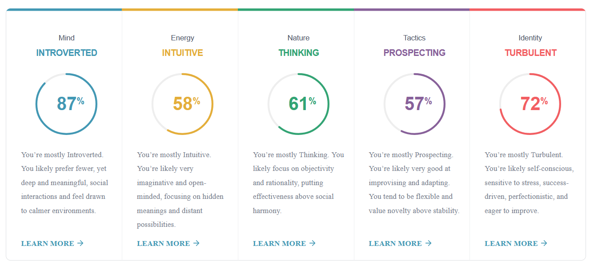
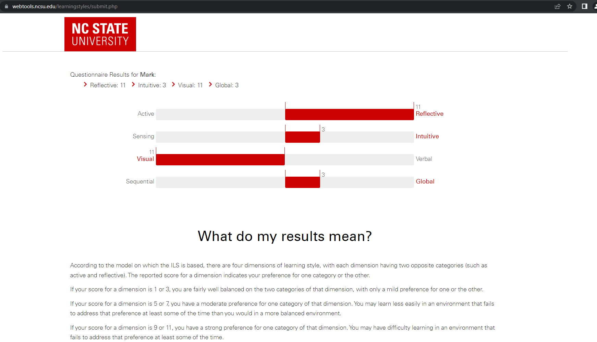

Team Alpha

Name: Mark McMillan
I'm born in Australia, my Father is from Northern Ireland and
my Mother is of Spanish decent. I live at a place called Howlong, which
is on the border of NSW and Victoria, about 30kms from Albury. I work on a farm.
My interests are sailing, cross country skiing and biathlon. I like to help the sports
by serving on their committees. The sailing committee keeps me busy!
I have been "playing" with computers for a long time, way back to the 1970's.
Lately I have been using Raspberry Pi's and Arduinos to practice coding and building some projects.
I have completed some programming and database subjects at OUA RMIT, liked those,
so I thought I would aim for the IT degree.
I undertook three learning style tests:
1. Myers Briggs personality test
2. North Carolina State University learning style test
3. Psychology Today Communication test
MBTI Test
1/ Myers/Briggs
The Myers Briggs test has been used since the 1960’s.
The test attempts to measure a person in terms of:
• Extroversion vs Introversion
• Sensing vs Intuition
• Thinking vs Feeling
• Judgement vs Perception
• Assertive vs Turbulent

Learning Style Test
2/ North Carolina State University Learning style
This test attempts to measure candidates learning type :
• Active vs Reflective
• Sensing vs Intuitive
• Visual vs Verbal
• Sequential vs Global

Results 11 is max : Reflective 11, Intuitive 3, Visual 11, Global 3
Other Test
3/ Psychology today communication style test
This test derives an “insightfulness” level, that indicates communication effectiveness.

Results : Insightfulness Index 60/100
How is the information helpful to the group?
I’m unsure I can answer this in general way. With personalities and other human traits, there are so many variables. For example the type of task may dictate the style of thinking required. Obviously a task needing deep multi component analysis is probably best suited to people that do not prematurely jump to a judgement phase. On the other hand, it is, in my experience important not to overload a team with the same skills, eg a person having a more “global” outlook on a problem is useful to ensure the team achieves its end goals with the individuals not just being totally engaged in their “silo”.
How should you take this into account when forming a team?
I believe a team balance is important, so as mentioned above, having a variety of human traits in a team is important. An issue is that the team is most often picked for you by a manager without much consultation. This is not usually because the manager lacks foresight, but often depends on what resources are available at any given time, eg people that happen to be between projects, what team leader(s) are available etc.
Further details of test results are available at :
https://s3221157.github.io/introITAssignment1/personalProfile3.html